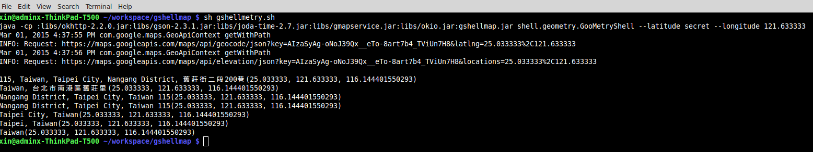

After downloading all necessary projects and .jar files, your workspace should look similar to the screenshot below.
In my eclipse workspace, the projects animal-sniffer, google-maps-services-java-master, okio-master,
and of course GoogleMap (my own Java Project for the GShell Map application)
are connected to each other due to their dependencies.

LIB_PATH contains all requiring .jar files,
then import this GShellMap project to your workspace, and add LIB_PATH/*.jar files to the build path.
Finally, compile everything by clicking "Save All".
To run the actual GShell Map application, select the GShell Map project, start a new launch configuration,
and choose one of these main classes:
- shell.distance.GMapShell
- shell.geometry.GooMetryShell
- shell.mysql.GPhonebook
It should work with any Java supporting IDE like
eclipse.
Run GShell Map in a shell box/command line (cmd)/console
GShell Map consists of several packages and main classes (GMapShell, GooMetryShell, GPhonebook, ...).
All main classes have been compressed in
gshellmap.jar.
Unfortunately, Google Map Service, and Okio don't provide any .jar files (at the time of this writing).
I had to download those open source projects, and compile them for myself. After the compilation, I archived the binaries into
- gmapservice.jar (Google Map Service)
- okio.jar (Okio)
and stored them in the subfolder
LIB_PATH
In general, the command for running this application looks like this:
java -cp .:$CLASSPATH $MAIN_CLASS
--parameter0 value0 --parameter1 value1 ... --parameter(n-1) --value(n-1)
$CLASSPATH contains
LIB_PATH
/okhttp-2.2.0.jarLIB_PATH
/gson-2.3.1.jarLIB_PATH
/joda-time-2.7.jarLIB_PATH
/mysql-connector-java-5.1.34-bin.jarLIB_PATH
/gmapservice.jarLIB_PATH
/okio.jar- gshellmap.jar
$MAIN_CLASS can be any of these ones (see also
Run GShell Map in Eclipse):
- shell.distance.GMapShell
- shell.geometry.GooMetryShell
- shell.mysql.GPhonebook
If you don't want to type in all those libraries by hand, use these following shell scripts to get started immediately:
- help (prints out help information on this shell script, and how to execute any programs)
- gshellmap.sh (executes shell.distance.GMapShell with default options)
- gshellmetry.sh (executes shell.geometry.GooMetryShell ...)
- gphonebook.sh (executes shell.mysql.GPhonebook)
Run GMapShell
Once you edit txt/settings.properties, the program will find your API-Key in the text file.
java -cp $CLASSPATH shell.distance.GMapShell $OPTIONAL_PARAMETERS
GMapShell calculates distances and travel duration between an origin (start point location), and a destination (end point location).
It also retrieves latitude -, longitude -, and elevation values for each given address.
Optional Parameters:
--help prints this help information
--language [de, en, en-GB, en-AU, es, fr, ...] see also https://developers.google.com/maps/faq#languagesupport
--unit [IMPERIAL (in feet, or miles)|METRIC (in metres, or kilometres)]
--mode [driving|bicycling|walking|transit]
--fuzzy [false|true]; if true, simple string queries can be performed (e. g. origin address: England, destination address: Germany
--routes [false|true]; if set true, all routes (directions) from the start address to the end address are listed
Run GooMetryShell

java -cp $CLASSPATH shell.geometry.GooMetryShell $PARAMETERS $OPTIONAL_PARAMETERS
GooMetryShell retrieves addresses by given coordinate values (latitude and longitude).
PARAMETERS:
--latitude [-90.000000, 90.000000]
--longitude [-179.999999, 180.000000]
Optional Parameters:
--help prints this help information
Run GPhonebook

java -cp $CLASSPATH shell.mysql.GPhonebook $PARAMETERS $OPTIONAL_PARAMETERS
GPhonebook works like a phone book. In the first place, it looks up fixed-line numbers, and street addresses (by given latitude and longitude values) which are stored in a database.
In addition, it also retrieves email addresses and mobile/cell phone numbers.
PARAMETERS:
--query [all|address|email|phone]
OPTIONAL_PARAMETERS
--help print this help information
If you're not familiar with
MySQL, here's a good
tutorial for beginners.
Create the database phonebook, and add some tables
After successfully
installing mysql, create the database phonebook and the tables. All create statements are saved in
sql/creates.sql
--creates.sql
CREATE DATABASE phonebok;
CREATE TABLE person(
id SMALLINT NOT NULL AUTO_INCREMENT,
lastname VARCHAR(16) NOT NULL,
name VARCHAR(70) NOT NULL,
latitude DOUBLE NOT NULL,
longitude DOUBLE NOT NULL,
elevation DOUBLE,
PRIMARY KEY(id));
CREATE TABLE email(
address VARCHAR(90) NOT NULL，
pid SMALLINT NOT NULL,
PRIMARY KEY(address),
FOREIGN KEY(pid) REFERENCES person(id));
CREATE TABLE phone(
phid SMALLINT NOT NULL AUTO_INCREMENT,
area_code SMALLINT NOT NULL,
number BIGINT NOT NULL,
pid SMALLINT NOT NULL,
PRIMARY KEY(phid),
FOREIGN KEY(pid) REFERENCES person(id));
Populate your tables with some data
Now you can populate your tables like this:
-- inserts.sql
-- examples for insert statements
INSERT INTO person(lastname, name, latitude, longitude)VALUES('Langstrump', 'Pippilotta Viktualia Rullgardina Krusmynta Efraimsdotter', 59.329444, 18.068611);
INSERT INTO email(address, pid)VALUES('pippilotta.viktualia.rullgardina.krusmynta.efraimsdotter.langstrump@gmail.se', 1);
INSERT INTO phone(area_code, number, pid)VALUES(46, 2343923433623439336, 1);
The insert statements above are saved in
sql/inserts.sql